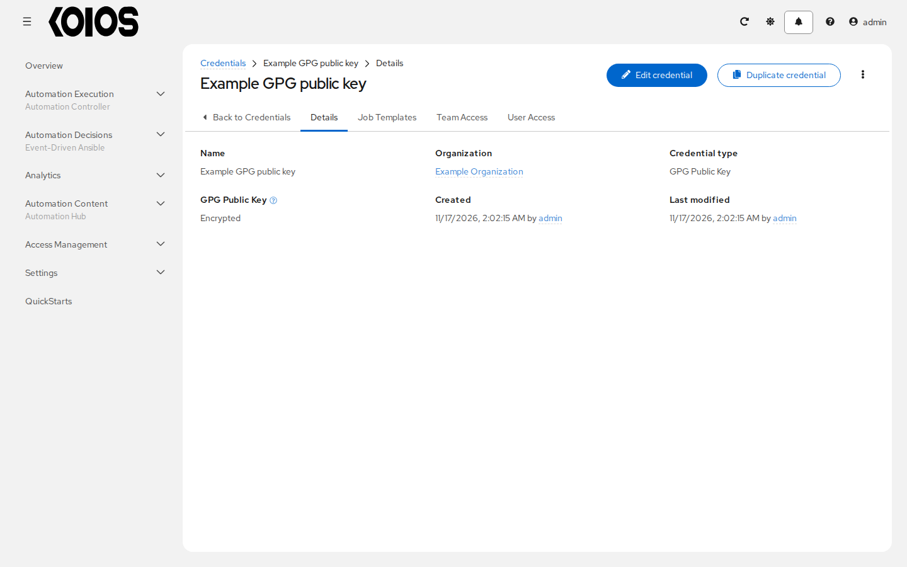
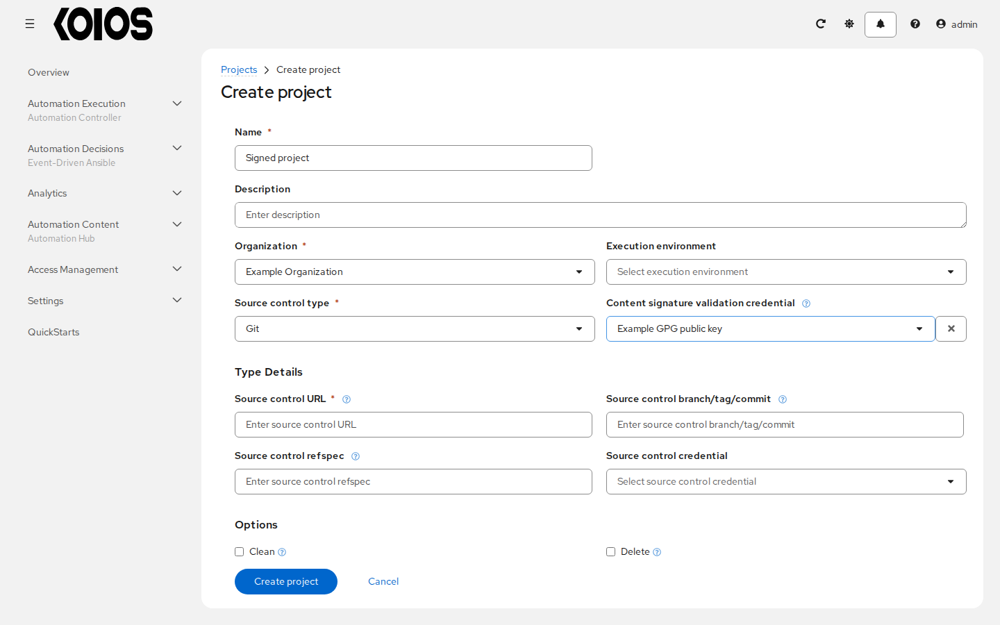
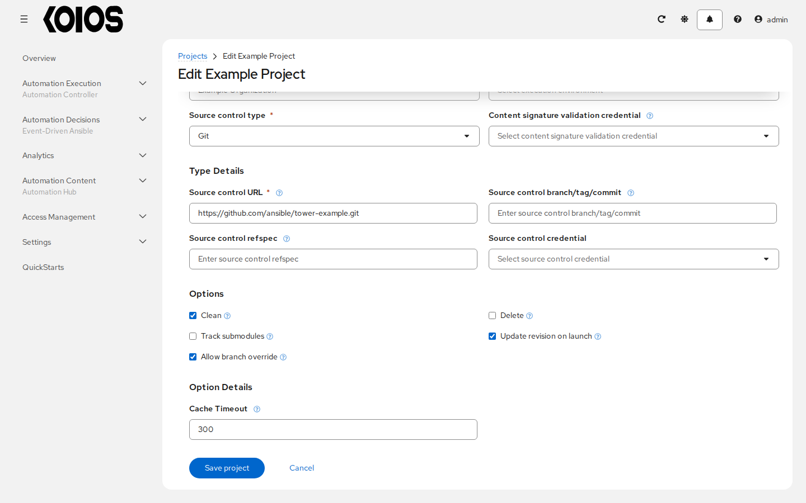

15. Project Signing and Verification
Note
Content signature validation uses the GPG Public Key credential type, available in Koios Automation Platform since 2026.11.8.
Project signing and verification provides the ability to sign files in your project directory and then verify whether or not that content has changed in any way, or files have been added or removed from the project unexpectedly. To accomplish this, a private key for signing and a matching public key for verifying are needed.
For project maintainers, the supported way to perform content signing is to use a utility called, ansible-sign, through the command-line interface (CLI) that comes with it.
The CLI aims to make it easy to use cryptographic technology like GNU Privacy Guard (GPG) to validate that specified files within a project have not been tampered with in any way. Currently, GPG is the only supported means of signing and validation.
Automation controller uses the GPG Public Key credential to verify signed project content. After a matching public key has been associated with the signed project, automation controller will verify that the files included during signing have not changed, and detects files added or removed unexpectedly. If the signature is invalid or a covered file has changed, validation fails the project update. Jobs waiting for that update cannot proceed with it. Review the project update output to confirm that verification completed successfully.
Assuming that the repository has already been configured for signing and verification (see below), the usual workflow for altering the project becomes the following:
User has a project repository set up already and wants to make a change to a file.
User makes the change, runs
ansible-sign project gpg-sign /path/to/project, which updates a checksum manifest and signs it.User commits the change and the updated checksum manifest and the signature to the repository.
When the user syncs the project, automation controller (already configured, in this scenario) pulls in the new changes, checks that the public key associated with the project in automation controller matches the private key that the checksum manifest was signed with (this prevents tampering with the checksum manifest itself), then re-calculates checksums of each file in the manifest to ensure that the checksum matches (and thus that no file has changed). It also looks to ensure that all files are accounted for: They must have been either included in, or excluded from, the
MANIFEST.infile discussed below; if files have been added or removed unexpectedly, verification will fail.
15.1. Prerequisites
A valid GPG public/private keypair is required for signing content. Refer to How to create GPG keypairs for details.
Visit the GnuPG documentation for more information regarding GPG keys.
You can verify that you have a valid GPG keypair and in your default GnuPG keyring, with the following command:
$ gpg --list-secret-keysIf the above command produces no output, or one line of output that states,
trustdb was created, then you do not have a secret key in your default keyring. In this case, refer to How to create GPG keypairs to learn how to create a new keypair before proceeding. If it produces output other than that, you have a valid secret key and are ready to move on to usingansible-sign.
15.2. Add a GPG key to automation controller
Export the public key on the signing workstation with the following commands:
$ gpg --list-keys
$ gpg --export --armour <key fingerprint> > my_public_key.asc
Open Automation Execution > Infrastructure > Credentials and click Create credential.
Provide the new credential a meaningful name (for example, Example GPG public key).
In Credential type, select GPG Public Key.
Upload the exported public key file (for example,
my_public_key.asc) in GPG Public Key, or paste its armored text. Do not upload the private key.Click Create credential when done.

Select the credential in the project’s Content signature validation credential field to request verification on future syncs; see projects. Validate the workflow with signed content and deliberately altered test content before relying on it.
The following example selects Example GPG public key for Signed project in the project creation form.

Note
Use the project cache SCM timeout to control how often you want automation controller to re-validate the signed content. When a project is configured to update on launch (of any job template configured to use that project), you can enable the cache timeout setting, which tells it to update after N seconds have passed since the last update. If validation is running too frequently, you can slow down how often project updates occur by specifying the time in the Cache Timeout field of the Option Details pane of the project.

15.3. Access the ansible-sign CLI utility
The ansible-sign utility provide options for the user to sign and verify whether the project is signed.
Run the following command to install
ansible-sign:
$ dnf install ansible-sign
Verify that
ansible-signwas successfully installed:
$ ansible-sign --version
Output similar to the following displays (possibly with a different version number):
ansible-sign 0.1
This indicates you have successfully installed ansible-sign.
15.4. Signing your project
As the name suggests, signing a project involves an Ansible project directory. Refer to the Ansible documentation for more sophisticated examples of project directory structures.
The following sample project has a very simple structure. An inventory file, and two small playbooks under a playbooks directory:
$ cd sample-project/
$ tree -a .
.
├── inventory
└── playbooks
└── get_uptime.yml
└── hello.yml
1 directory, 3 files
Note
The commands used in this section assume that your working directory is the root of your project. As a rule, ansible-sign project commands always take the project root directory as their last argument, and therefore, we use . to indicate the current working directory.
The way that ansible-sign protects content from tampering is by taking checksums (SHA256) of all of the secured files in the project, compiling those into a checksum manifest file, and then finally signing that manifest file.
The first step toward signing content is to create a file that tells ansible-sign which files to protect. This file should be called MANIFEST.in and reside in the project root directory.
Internally, ansible-sign makes use of the distlib.manifest module of Python’s distlib library, and thus MANIFEST.in must follow the syntax that this library specifies. See the Python Packaging User Guide for an explanation of the MANIFEST.in file directives.
In the sample project, the directives protect the inventory, the playbooks and the MANIFEST.in file itself, and leave out the .git directory, resulting in a MANIFEST.in file that looks like this:
include inventory
recursive-include playbooks *.yml
include MANIFEST.in
prune .git
Automation controller verifies a git checkout of the project, so every file in it must be included in or excluded from MANIFEST.in. Without prune .git, the files of the .git directory are reported as added and the project sync fails.
With this file in place, generate your checksum manifest file and sign it. Both of these steps are achieved in a single ansible-sign command:
$ ansible-sign project gpg-sign .
[OK ] GPG signing successful!
[NOTE ] Checksum manifest: ./.ansible-sign/sha256sum.txt
[NOTE ] GPG summary: signature created
Now the project has been signed.
Notice that the gpg-sign subcommand resides under the project subcommand. For signing project content, every command will start with ansible-sign project. As noted above, as a rule, every ansible-sign project command takes the project root directory as its final argument.
As mentioned earlier, ansible-sign by default makes use of your default keyring and looks for the first available secret key that it can find, to sign your project. You can specify a specific secret key to use with the --fingerprint option, or even a completely independent GPG home directory with the --gnupg-home option.
Note
If you are using a desktop environment, GnuPG will automatically prompt you for your secret key’s passphrase. If this functionality does not work, or you are working without a desktop environment (e.g., via SSH), you can use the -p/--prompt-passphrase flag after gpg-sign in the above command, which will cause ansible-sign to prompt for the password instead.
Upon viewing the structure of the project directory, notice that a new .ansible-sign directory was created. This directory contains the checksum manifest and a detached GPG signature for it.
$ tree -a .
.
├── .ansible-sign
│ ├── sha256sum.txt
│ └── sha256sum.txt.sig
├── inventory
├── MANIFEST.in
└── playbooks
├── get_uptime.yml
└── hello.yml
15.5. Verifying your project
If you want to verify that a signed Ansible project has not been altered, you can use ansible-sign to check whether the signature is valid and that the checksums of the files match what the checksum manifest says they should be. In particular, the ansible-sign project gpg-verify command can be used to automatically verify both of these conditions.
$ ansible-sign project gpg-verify .
[OK ] GPG signature verification succeeded.
[OK ] Checksum validation succeeded.
Note
By default, ansible-sign makes use of your default GPG keyring to look for a matching public key. You can specify a keyring file with the --keyring option, or a different GPG home with the --gnugpg-home option.
If verification fails for any reason, information will be displayed to help you debug the cause. More verbosity can be enabled by passing the global --debug flag, immediately after ansible-sign in your commands.
Note
Select a GPG Public Key credential in the project’s Content signature validation credential field to enable verification on future project syncs. See Add a new project for the project configuration.
15.6. Automate signing
In environments with highly-trusted CI environments (e.g., OpenShift, Jenkins, etc.), it is possible to automate the signing process. For example, you could store your GPG private key in a CI platform of choice as a secret, and import that into GnuPG in the CI environment. You could then run through the signing workflow above within the normal CI workflow/container/environment.
When signing a project using GPG, the environment variable ANSIBLE_SIGN_GPG_PASSPHRASE can be set to the passphrase of the signing key. This can be injected (and masked/secured) in a CI pipeline.
Depending on the scenario at hand, ansible-sign will return with a different exit-code, during both signing and verification. This can also be useful in the context of CI and automation, as a CI environment can act differently based on the failure (for example, sending alerts for some errors but silently failing for others).
These are the exit codes used in ansible-sign currently, which can be considered stable:
Exit code |
Approximate meaning |
Example scenarios |
|---|---|---|
0 |
Success |
|
1 |
General failure |
|
2 |
Checksum verification failure |
|
3 |
Signature verification failure |
|
4 |
Signing process failure |
|